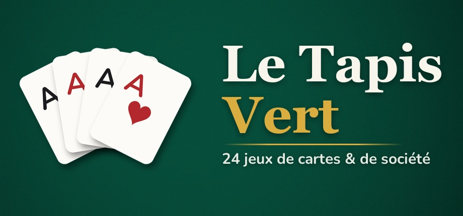
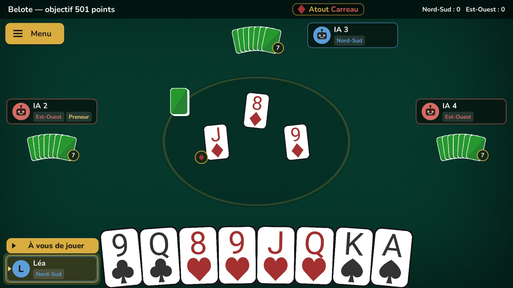
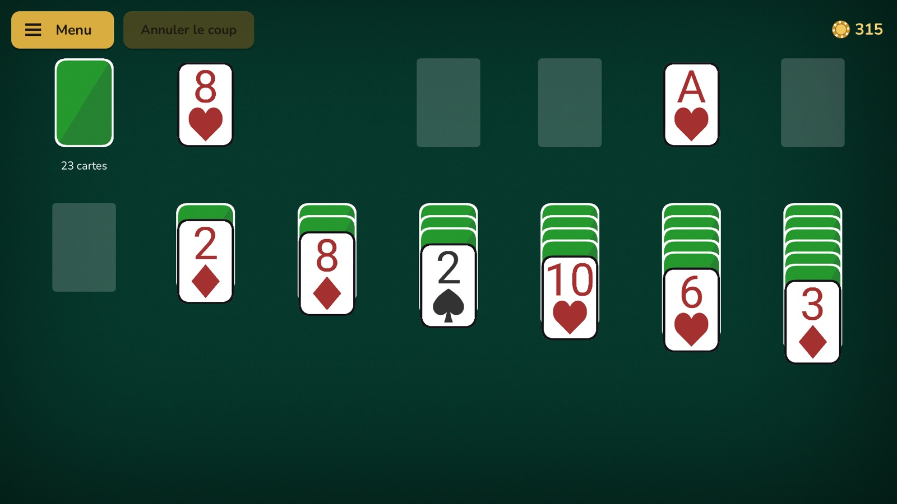
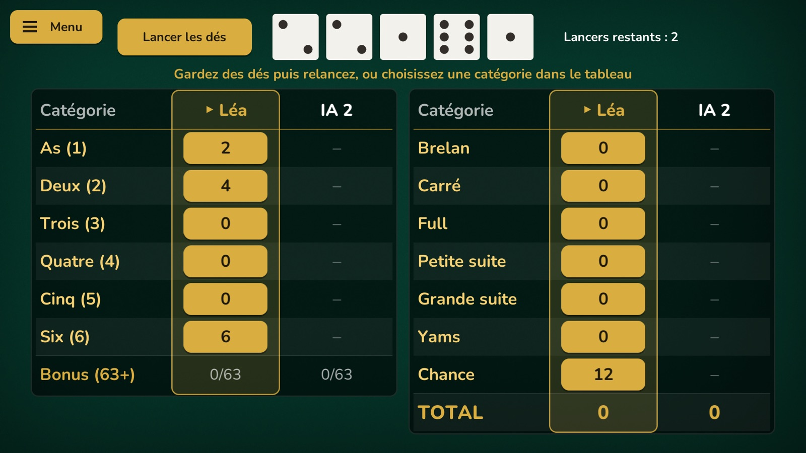
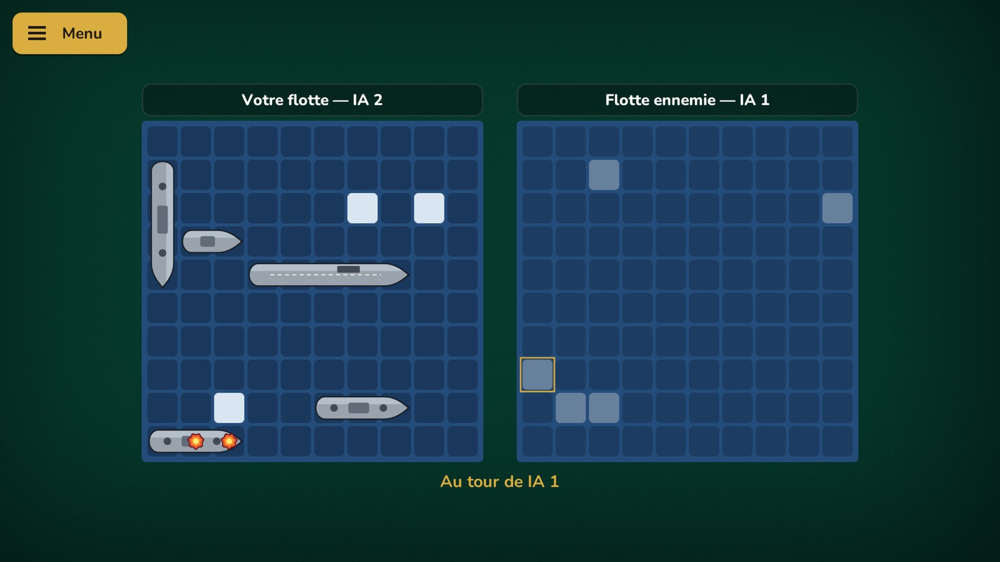
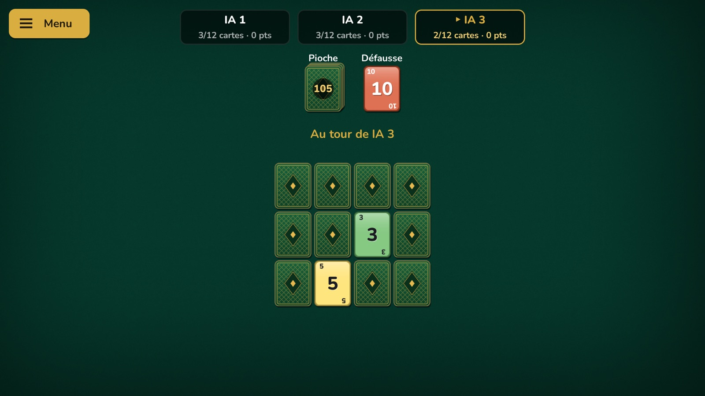
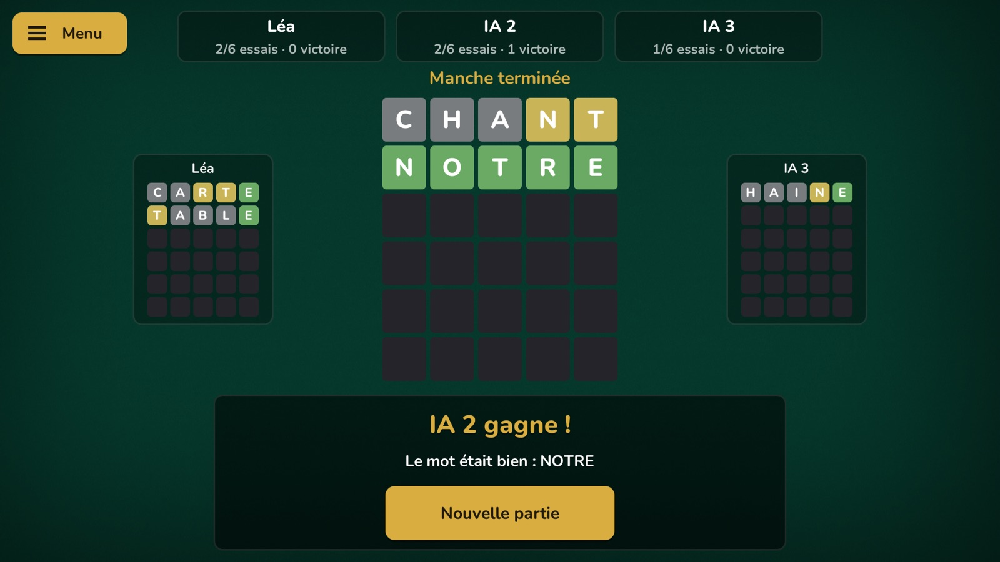

Le Tapis Vert
Les jeux de cartes et de société qu’on sort le dimanche, réunis sur un seul tapis : 24 classiques, à jouer seul contre l’ordinateur, à plusieurs sur le même écran, ou en ligne avec un ami. Sans publicité et sans compte à créer.
Vingt-quatre jeux classiques, un seul tapis.
Une partie de Belote avec la famille, un Solitaire au calme, un Quatre en ligne entre deux cafés. Le Tapis Vert rassemble les grands classiques des cartes, du plateau et de la réflexion, avec leurs vraies règles et des adversaires qui jouent vraiment.
Chaque partie terminée rapporte des jetons, même perdue, et les jetons débloquent de nouveaux jeux. Ceux qui préfèrent peuvent tout ouvrir d’un coup avec un achat unique, entièrement facultatif.
Captures






En bref
FAQ
Le jeu est-il vraiment gratuit ?
Sur téléphone et tablette, oui. Plusieurs jeux sont ouverts dès le départ, les autres se débloquent avec les jetons gagnés en jouant. L’achat « Tout débloquer » fait gagner du temps, rien de plus. Il n’y a ni publicité, ni abonnement, ni pack de jetons à acheter. Sur Steam, le jeu s’achète une fois et tout est ouvert d’emblée.
Faut-il créer un compte ?
Non. Votre progression reste sur votre appareil (et dans Steam Cloud pour la version PC et Mac). Le détail est dans la politique de confidentialité.
Peut-on jouer à plusieurs ?
Oui : jusqu’à quatre sur le même écran, en se passant le téléphone, ou en ligne avec un ami pour l’Ascenseur et le Huit Américain. Les places libres sont tenues par l’ordinateur.
Une version iPhone ou PC ?
Oui. La version iPhone et iPad est sur l'App Store, gratuite comme sur Google Play. La version PC et Mac est sur Steam depuis le 14 octobre 2026 : payante, avec tous les jeux ouverts d’emblée, les succès Steam et la sauvegarde dans Steam Cloud.
Une idée, un bug, une règle qui diffère de chez vous ?
Écrivez-moi à contact@petitvaisseau.com : je lis tout et je réponds moi-même.